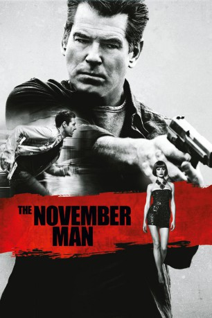
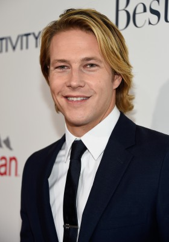
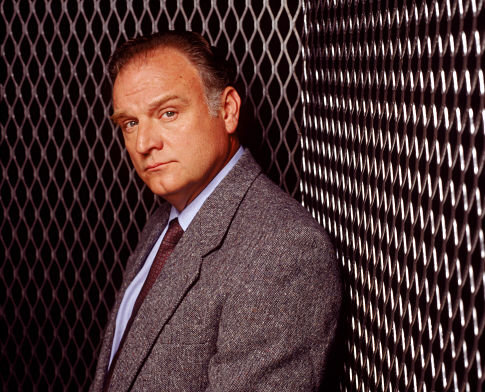
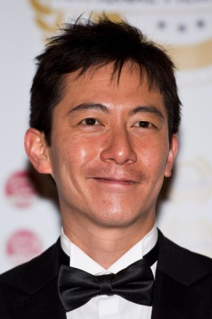

#3185 The November Man
 
 IMDB-Wertung: 6.3 / 10
IMDB-Wertung: 6.3 / 10  Metascore: 38
Metascore: 38 
Top-Agent Peter Devereaux, Code-Name "November Man", hat sich nach seinem letzten Fall in den verdienten Ruhestand in die Schweiz begeben. Doch das Idyll währt nicht lange: Peters ehemaliger Chef beordert seinen besten Mann zurück in den Dienst, denn wie es scheint, wurde der CIA von einem Maulwurf infiltriert. Peter soll die Zeugin Alice Fournier beschützen und den Komplott aufdecken, dessen Zielscheibe auch sein eigenes Leben ist - ein Killer wurde auf den Agenten angesetzt. Als Peter entdeckt, dass auch sein ehemaliger Schützling David Mason in die Affäre verwickelt zu sein scheint und womöglich dem russischen Geheimdienst angehört, gibt es für den Spion kaum noch Anhaltspunkte, wem er trauen kann und wem nicht: Er muss auf eigene Faust ermitteln.
Jahr: 2014
Dauer: 108 Minuten
FSK: 16
Land: USA Studio: Relativity MediaTonspuren: DTS - ,
Untertitel: Deutsch, Englisch,
Auflösung: 1080p (1920x800) Größe: 8273 MB
Genre: Action, Thriller, Krimi
Regisseur: Roger Donaldson
Drehbuch: Michael Finch, Karl Gajdusek, Bill Granger
Soundtrack: Marco Beltrami
Darsteller:
 Pierce Brosnan als Peter Devereaux
Pierce Brosnan als Peter Devereaux-  Luke Bracey als David Mason
 Olga Kurylenko als Alice Fournier
Olga Kurylenko als Alice Fournier-  Bill Smitrovich als Hanley
- Amila Terzimehic als Alexa
- Lazar Ristovski als Arkady Federov
- Mediha Musliovic als Natalia Ulanova
- Eliza Taylor als Sarah
- Caterina Scorsone als Celia
-  Akie Kotabe als Meyers
 Will Patton als Perry Weinstein
Will Patton als Perry Weinstein Patrick Kennedy als Edgar Simpson
Patrick Kennedy als Edgar Simpson- Ben Willens als Agent Jones
- Milos Timotijevic als Federov's Chief of Staff
- Ben Dimmock als CIA Operator #3
- Masa Dakic als Michelle, Barmaid
- Miodrag Stojanovic als Reporter #4, O / S Ministry
- Mark Mottram als CIA Agent - Jake
- Dragana Atlija als Shot Girl , uncredited
- Lena Milan als Public Announcer - Belgrade Train Station , uncredited
- Dragan Marinkovic als Denisov
- Dragan Dvojakovic als Ambassador
- Tara Jevrosimovic als Lucy
- Nina Mrdja als Mira Filipova, 15 years
- Greg De Cuir als CIA Operator #1
- Steve Shapiro als CIA Operator #2
- Justin Chapman als CIA Cleaner #1
- Chad Z. King als CIA Cleaner #2
- Petar Bencina als Russian Thug at KGB Club
- Milutin Milosevic als Serbian Hacker
- Nina Jankovic als Young Attractive Woman
- Jadranka Bugarski als Newscaster, O / S Ministry
- Nina Lazarevic als Reporter #3, O / S Ministry
- Tijana Plemic als Reporter #2, O / S Ministry
- Nebojsa Djordjevic als Reporter #1, O / S Ministry
- Marko Markovic als Russian Security Guard
- Ilija Labalo als CIA Agent, scanner guy
- Yulia Martynyuk als Station Ticket Clerk
- Radoje Jelic als Bodyguard , uncredited
- Srdjan Rale Jovanovic als CIA Agent , uncredited
- Marko Kovac als Senator , uncredited
- Marko Markovic als Federov's Security , uncredited
- Nenad Todorovic als CIA Sedan Driver , uncredited
- Lazar Tomic als CIA Agent , uncredited
Datei: X:\2014(N-Z)\November Man, The (2014, FSK16, 1920x800).mkv seit 10.02.2016
Festplatte: HD 2013(I-Z)-2014(A-Z)
 Es gibt insgesamt 163 Filme in der Gruppe '2014(N-Z)'
Es gibt insgesamt 163 Filme in der Gruppe '2014(N-Z)'